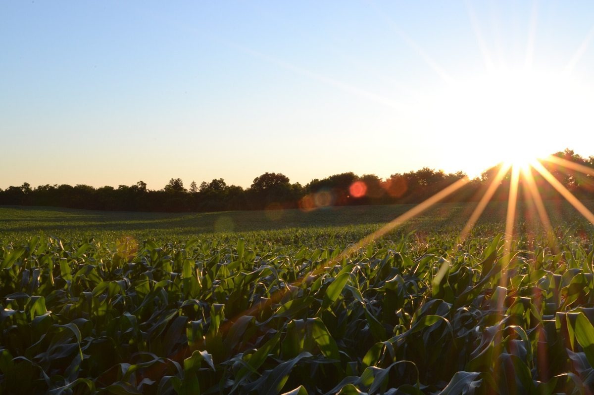
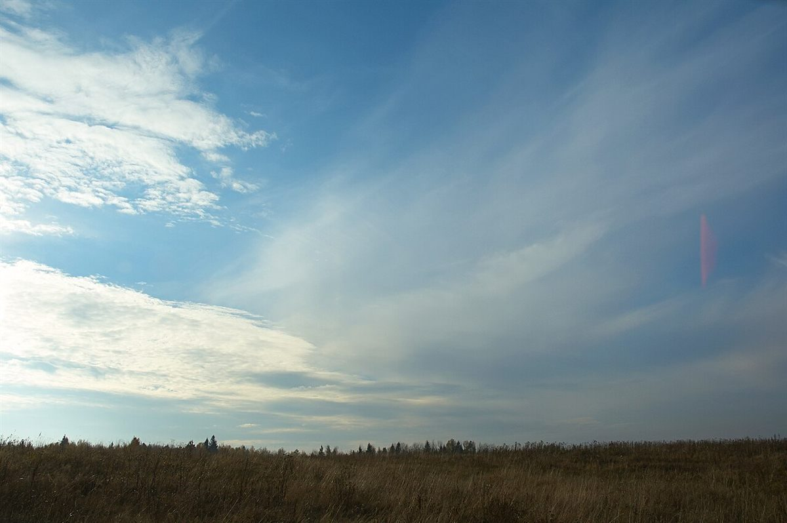

カフェ / 山口県岩国市美和町長谷
Hilltopcafe
山口県岩国市美和町長谷にあるカフェ「Hilltop cafe」のご案内ページです。営業時間やメニューなど、詳しいことは準備中。まずはInstagramをのぞいてみてください。

制作側の連想
「Hilltop」から、つづら折りの道を考えた
「hilltop」は英語で丘の頂上という意味の言葉です。制作側はこの言葉から、折り返しながら登っていく「つづら折りの道」を連想し、このサイトを第1〜第5の5つのカーブで構成しました。お店の理念・由来とは無関係の、制作側の連想です。お店が丘の上にあるかどうかも分かりません。
道のり案内
5つのカーブをたどる
各ページへの案内です。写真はお店のものではなく、国外または撮影地不明のフリー素材です。


てっぺんの空(イメージ)
登りきったら、空だけ。



ご案内
お店のこと(確認できたものだけ)
| 所在地 | 〒740-1215 山口県岩国市美和町長谷1135 |
|---|---|
| 電話 | なし |
| 営業時間 | 準備中 |
| 定休日 | 準備中 |
| ご予約 | 準備中 |
| 駐車場 | 準備中 |
| SNS | Instagram @hilltopcafemiwa |